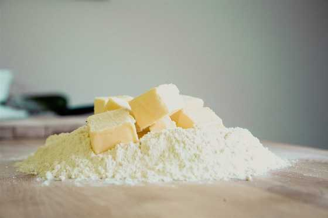

3人の娘を持つお母さんが、安心して口にできる素材で菓子づくりを始めたのが、ママンズシフォンのはじまりと紹介されています。専門の菓子職人ではなく、大切な人を想う母親の目線で、ひとつひとつ丁寧に作っているそうです。
「ひとつひとつ心を込めてお作りしています」という言葉のとおり、訪れた方がほっとできる、心温まる時間を届けたい。そんな想いからこのページの雰囲気を考えました。
- 茨城県産の卵、北海道産小麦粉、きび砂糖、米油を使用
- 保存料・膨張剤は不使用
- 2023年6月オープンと掲載されています(食べログ)